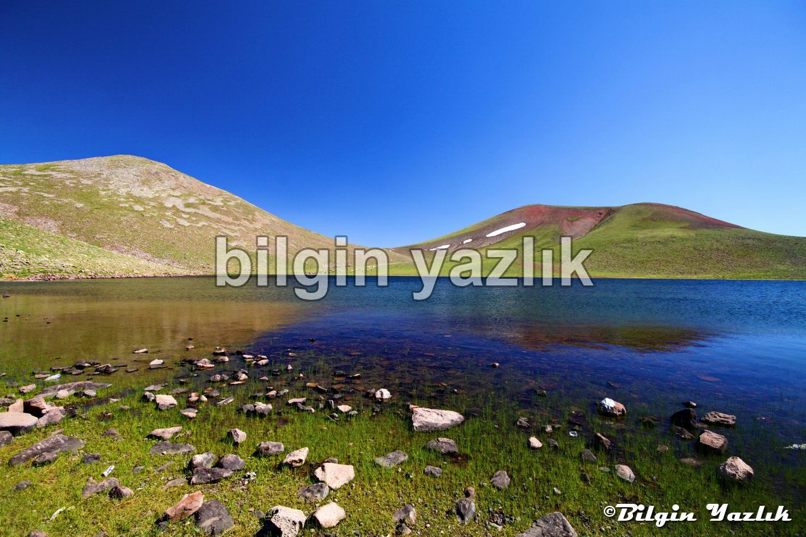
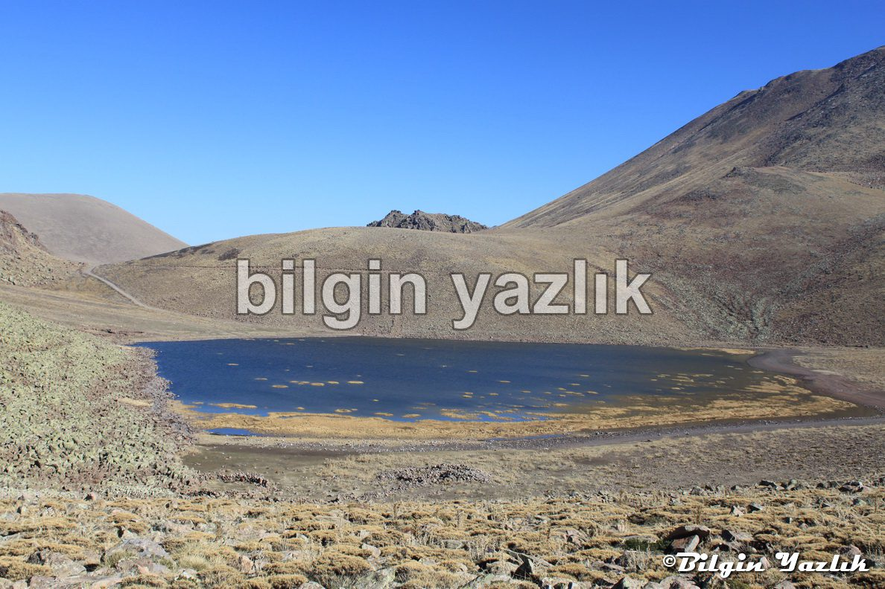
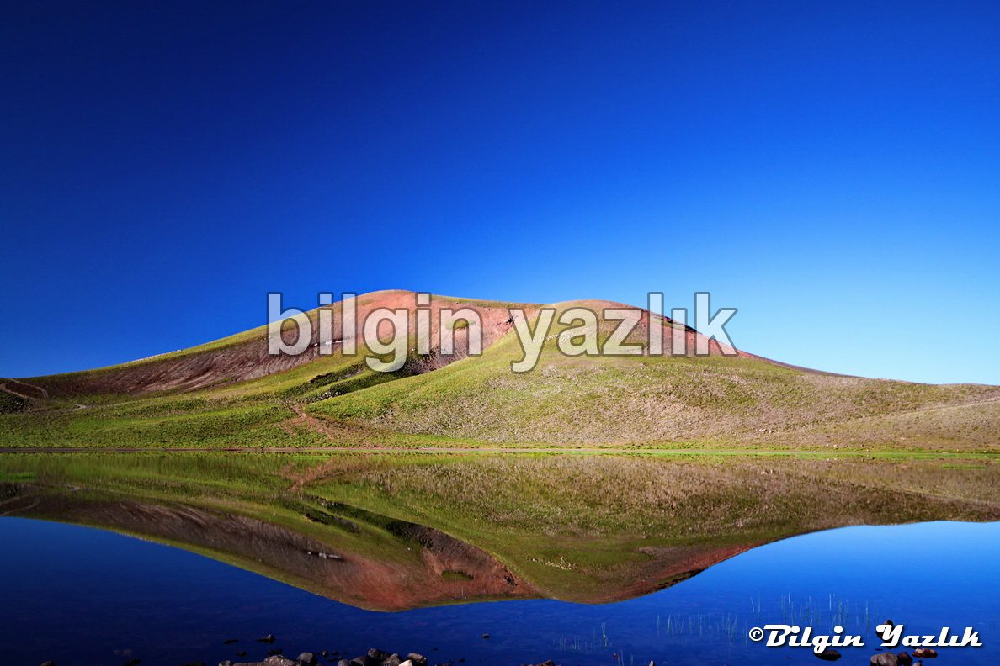
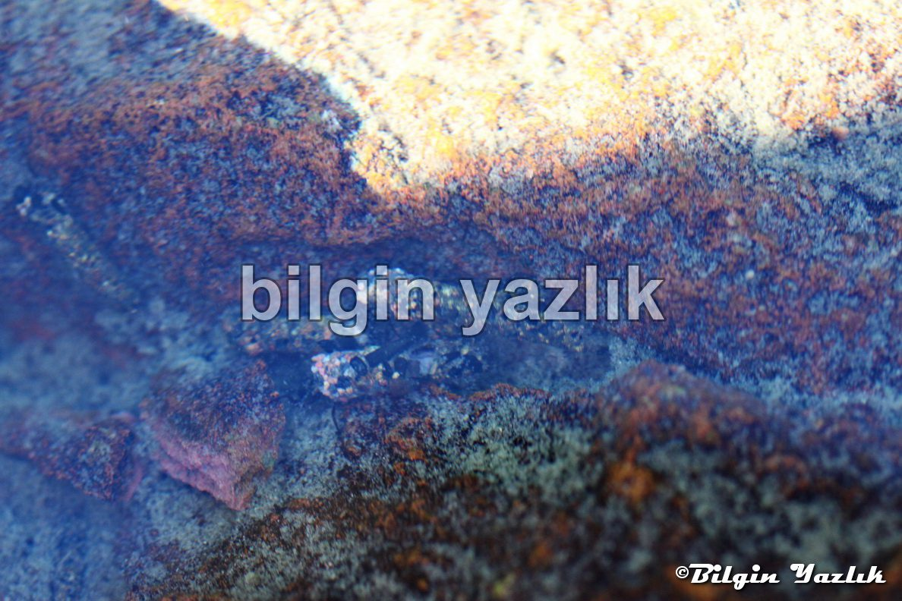

Sarı Göl
Hacılar’dan Erciyes Dağı Süt Donduran Yaylası yoluna saptıktan sonra bıkmadan usanmadan yol alıyoruz.
Yaylacılar arasından kıvrıla kıvrıla giden yol bir süre sonra çatal yapıyor, soldaki yol yani yukarıya devam eden yol Süt Donduran Yaylası’na sağdaki yani yükselmeden devam eden yol Sarı Göle gidiyor.
Yürüyerek veya jeep türü bir araç ile göle gidebilirsiniz ama yol oldukça bozuk.
Gölün adı içerisinde yetişen ve sarıya çalan renk tonlarıyla göle yayılmış olan sazlardan geliyor.
Gölün kıyılarında yılkı atları var, sayıları on – onbeş arasında değişen bu atları görmek için sabırlı ve şanslı olmak gerekiyor, atlar sadece susadıklarında su kenarına iniyorlar.
Sayıları gittikçe azalan atlar tabii ortamda yetişen ender atlar arasında yer alıyorlar.
Göl suyu çok derin değil ve yüz ölçümü de çok büyük değil fakat suyu çok soğuk.
Suya yaklaşın ve içine dikkatlice bakın, onlarca farklı tür canlı göreceksiniz, kabuklusundan, eklem bacaklısına onlarca tatlı su canlısı bu göl içerisinde hayat bulmuş.
Türlerinin adını bilmiyorum, bilen birileri varsa paylaşırsa memnun olurum.
Konum: 38°32’40.98″K, 35°22’13.70″D




Bu yazı taliyol arşivinden taşınmıştır. · özgün kayıt